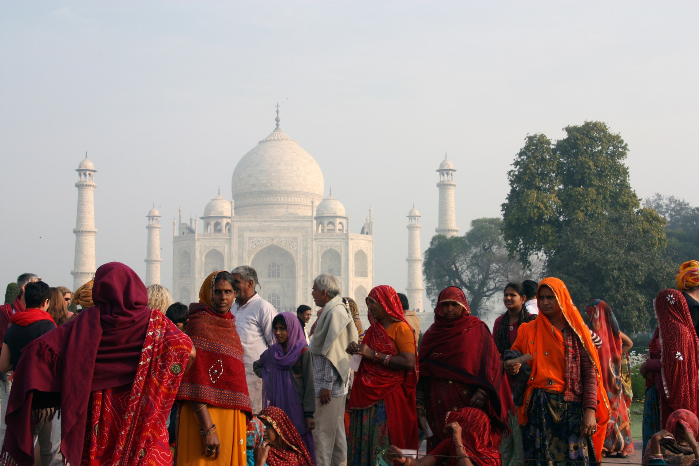
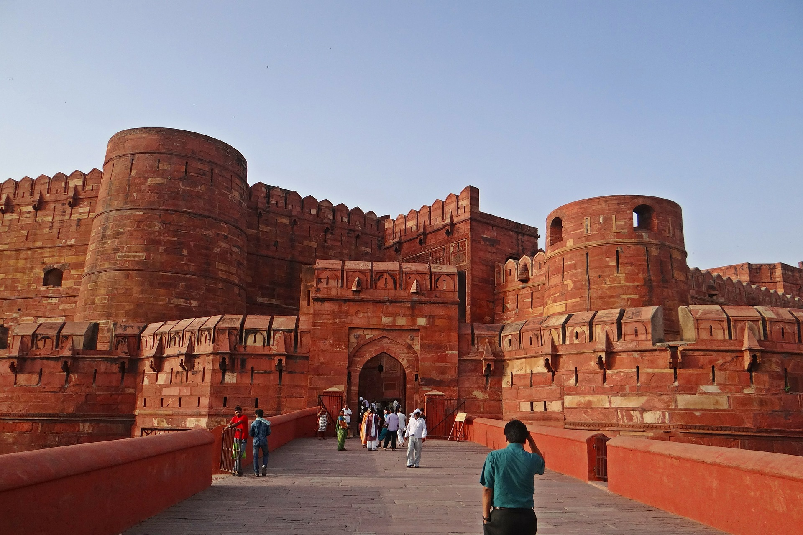

Historical Sites
- The Taj Mahal
- Agra Fort
- Rani Ki
- Hawa Mahal
- Red Fort
- Humayuns Tomb

Must See Places

- The Taj Mahal: Explore one of the seven wonders of the world.This opulent white marble structure was commissioned to be built in 1632 by Shah Jahan for his late wife Mumtaz Mahal.
It took around 22 years to complete this magnificent structure that is considered one of the most famous historical places in India.
According to local legend, it was believed that Shah jahan cut off the hands of all the workers who built the Taj Mahal so that a similar monument could not be built.
The Taj Mahal stands on the southern bank of the Yamuna River in Agra, India. One of the most outstanding examples of Mughal architecture, which combined Indian, Persian and Islamic influences.
- Agra Fort: Built in 1565 by Akbar, this historical tourist place in India has two ornately designed gates: the Amar Singh Gate and the Delhi Gate.
You can only enter through the Amar Singh Gate to uncover an ancient city filled with gateways, courts, passages, palaces and mosques.
This powerful fortress of red sandstone encompasses, within its 2.5-km-long enclosure walls, the imperial city of the Mughal rulers.
Construction began along the bank of the Yamuna River by Emperor Akbar in 1565. Further additions were made, particularly by his grandson Shah Jahan, using his favourite building material white marble.
The fort was built primarily as a military structure, but Shah Jahan transformed it into a palace, and later it became his gilded prison for eight years after his son Aurangzeb seized power in 1658.
- Rani Ki: The Rani Ki is an 11th-century-stepwell situated in the town of Patan in Gujarat, India. The Rani Ki Vav stepwell is a massive structure that is around 24 meters deep. One of the most unexplored historical places in India,
this stepwell was built in the 11th century AD, as a memoriam for King Bhimdev of the Solanki dynasty by his wife Queen Udayamati.
The lowest level of the stepwell was earlier used as a route to escape to neighbouring villages.
- Hawa Mahal: The Hawa Mahal located in Jaipur is a very popular destination among tourists.
Jaipur is the largest city and capital of Rajasthan and is also one of Indias most visited destinations. The ‘Palace of Winds’ or Hawa Mahal gets its name due to the fact that it looks like a honeycomb of a beehive with its 953 intricate windows.
It is also shaped like a crown as the ruler who built it, Maharaja Sawai Pratap Singh, was a major devotee of Lord Krishna.
This palace is known as the tallest building in the world that doesn’t have any foundation. The palace is curved but still stands firm due to its pyramidal shape.
- Red Fort: Named for its massive enclosing walls of red sandstone.The Red Fort Complex was built as the palace fort of
Shahjahanabad the new capital of the fifth Mughal Emperor of India, Shah Jahan.The Red Fort has been a symbol of power since the reign of Shah Jahan, has witnessed the change in
Indian history to British rule, and was the place where Indian independence was first celebrated, and is still celebrated today. A bird's eye view of this amazing architectural splendour spread over 256 acres reveals its octagonal shape.
- Humayun's Tomb: Located in the eastern part of Dehli, Humayuns tomb is one of the best preserved Mughal monuments.
This spellbinding mausoleum is the first example of Mughal architecture in India strongly influenced by Persian architecture.
The tomb was commissioned by Bega Begum, Humayun’s Persian wife and chief consort in 1565 AD, nine years after the Emperor’s death.
The construction was finished in 1572. Humayun is one of the best preserved Mughal monuments and was declared a UNESCO World Heritage site in 1993.